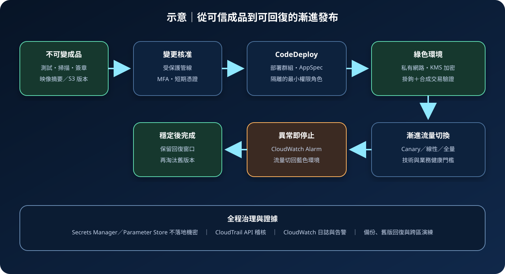

AWS CodeDeploy：受控部署與安全回復
AWS CodeDeploy 將已驗證的應用程式修訂部署至 Amazon EC2、內部部署執行個體、AWS Lambda 或 Amazon ECS。它能自動化安裝、流量切換與回復，但不會自行判斷成品可信度、業務健康狀態或變更是否應獲核准。
作者：Dr. William｜查閱與發布：2026-09-19
服務定位
AWS CodeDeploy 是受管部署服務，用來把指定版本的程式、設定與部署指令送到支援的運算目標。它可依部署設定控制一次更新多少目標，配合負載平衡器停止或恢復流量，並在部署失敗或 CloudWatch Alarm 進入告警時停止或回復。
CodeDeploy 位於「可信成品已產生」與「工作負載開始提供服務」之間。它不是原始碼審查、建置、弱點掃描、資料庫結構遷移治理或完整持續交付編排工具；這些能力需要 CodeBuild、CodePipeline、測試平台、核准流程及工作負載自己的遷移機制配合。
核心概念與適用邊界
主要元件
- 應用程式：作為部署資源的邏輯容器，依 EC2／內部部署、Lambda 或 ECS 運算平台建立。
- 部署群組：指定目標執行個體、Auto Scaling 群組、Lambda 函數、ECS 服務、服務角色、告警、負載平衡器及回復規則。
- 應用程式修訂：EC2／內部部署可使用存於 S3 或 GitHub 的封裝；Lambda 與 ECS 部署以 AppSpec 指向目標版本或 task definition。
- AppSpec：描述檔案放置、權限與生命週期掛鉤，或定義 Lambda／ECS 流量切換目標及驗證函數。
- 部署設定：決定最低健康主機數或流量如何逐步轉移，例如一次全部、線性或 Canary。
- 部署類型：EC2／內部部署支援原地更新；藍綠部署建立或指定替代環境，再將流量切換至新版本。
邊界與依賴
- EC2 與內部部署原地更新依賴 CodeDeploy agent 正常、可連線且有正確作業系統權限。
- 部署成功條件來自掛鉤結束狀態、最低健康目標與告警；若健康訊號設計錯誤，錯誤版本仍可能被視為成功。
- 藍綠降低原環境被覆寫的風險，但資料庫及外部狀態仍需向前與向後相容的遷移設計。
- CodeDeploy 服務角色、目標執行個體角色及部署掛鉤執行角色是不同信任邊界，不應共用寬權限角色。
- 部署資源具有區域性；成品、KMS 金鑰、負載平衡器、ECS 服務與目標運算資源須符合服務支援與區域設計。
適合與不適合的使用情境
適合
- 需要以一致流程部署至多台 EC2 或內部部署伺服器，並控制最低可用主機數。
- 需要為 Lambda 版本或 ECS 服務執行 Canary、線性或一次性流量切換與自動回復。
- 需要將部署事件、生命週期掛鉤、CloudWatch 告警及 CloudTrail 變更紀錄集中留證。
- 需要把部署群組依環境、帳號、區域或風險等級隔離，並由 CodePipeline 串接核准與發布。
不適合或不能單獨完成
- 成品尚未經測試、掃描、固定版本及完整性驗證時，不應讓自動部署替代供應鏈控制。
- 需要複雜跨服務、跨區域、資料庫遷移與人工核准編排時，仍需管線或工作流程服務協調。
- 工作負載平台不在 CodeDeploy 支援範圍，或必須使用平台原生控制器時，應選擇相符部署機制。
- 沒有可靠健康檢查、監控門檻與可回復版本時，不宜直接採用全量自動流量切換。
示意故事案例：訂單 API 的藍綠發布
以下為示意案例，不代表特定組織或正式部署。 一個訂單平台將通過測試、弱點掃描及簽章驗證的容器映像，以不可變摘要登錄為 ECS task definition。CodePipeline 完成變更核准後，交由 CodeDeploy 對生產 ECS 服務執行藍綠部署。新 task set 先連到測試 listener，部署掛鉤執行合成交易，確認登入、建立訂單及唯讀查詢正常。
CodeDeploy 接著把少量正式流量導向綠色環境。CloudWatch 監看錯誤率、延遲與業務失敗率；任一門檻觸發就停止部署並把流量切回藍色環境。觀察期通過後才完成切換，舊 task set 保留短時間供快速回復。服務角色只有更新指定 ECS 服務與目標群組所需權限，機密在執行期由 Secrets Manager 取得，不放入 AppSpec、掛鉤輸出或部署日誌。

建置與運作流程
- 定義部署單元：確認運算平台、應用程式、部署群組、目標環境、資料分類、服務擁有者與可接受中斷時間。
- 建立可信修訂：固定來源提交、映像摘要或 S3 物件版本，完成測試、掃描、成分清單與簽章；禁止覆寫已核准成品。
- 撰寫 AppSpec：只包含必要檔案、權限與生命週期掛鉤；掛鉤需可重複執行、設定逾時並以明確狀態回報失敗。
- 拆分 IAM 角色：CodeDeploy 服務角色只管理指定目標；EC2 instance profile 或 Lambda 掛鉤角色只讀必要成品、日誌及機密。
- 建立網路邊界：部署目標放在適當私有子網路，以安全群組、VPC 端點、端點政策與受控出口限制連線。
- 選擇部署策略：依容量、風險與回復時間選原地或藍綠，以及全量、線性或 Canary；先在非生產環境驗證。
- 連接健康判定：設定負載平衡器健康檢查、部署驗證掛鉤與 CloudWatch Alarm，涵蓋技術及關鍵業務指標。
- 保護機密與成品：S3、ECR、日誌及必要設定採私有存取與 KMS 加密；機密由 Secrets Manager 或 Parameter Store 動態提供。
- 啟用稽核：由 CloudTrail 保存部署設定與 API 變更，CloudWatch 收集 agent、掛鉤、應用程式及告警訊號。
- 演練失敗與復原：測試掛鉤失敗、健康告警、agent 中斷、容量不足、回復及跨區重新部署，記錄 RTO／RPO 與人工接管條件。
成本、可用性與維運考量
CodeDeploy 的 AWS 雲端部署與內部部署執行個體更新採不同計價方式，實際規則應依官方價格頁及當前區域確認。即使部署服務本身沒有額外費用，藍綠期間的雙份 EC2、ECS 或 Lambda 容量，負載平衡器、NAT Gateway、S3、ECR、CloudWatch、KMS、資料傳輸、測試及跨區備援仍會產生成本。應以部署頻率、觀察期、舊環境保留時間及失敗率估算完整發布成本。
原地部署節省重複容量，但更新中可用容量下降，且回復常需再次部署舊修訂。藍綠可先驗證新環境並快速切回流量，但需額外容量、配額與相容的狀態管理。部署群組應跨可用區分散目標，設定可承受的最低健康數，並確認 Auto Scaling、負載平衡器及服務配額不會在尖峰時阻塞替代環境。
CodeDeploy 是區域性服務。重要系統需要在替代區域預先準備應用程式與部署設定、複製經驗證成品、KMS 金鑰策略及必要基礎設施，並定期演練 DNS 或流量層切換。單純備份 AppSpec 無法重建完整服務。
CodeDeploy 特有資安風險與控制
- AppSpec 或掛鉤執行任意命令：保護來源分支，要求審查與簽章；部署只接受經核准的不可變修訂，掛鉤以最低作業系統權限執行。
- 服務角色可修改過多資源：依帳號、環境與應用程式拆分角色，限制資源 ARN、條件及 iam:PassRole，避免萬用管理權限。
- agent 遭竄改或版本陳舊：只從 AWS 官方來源安裝，驗證套件，限制主機管理權，透過 Systems Manager 盤點、修補並監控服務狀態。
- 部署目標標籤誤選：使用專用標籤命名空間與變更檢查，預覽目標集合；生產部署群組不得使用過度寬鬆的標籤條件。
- 成品置換或降版：S3 開啟版本控制並限制寫入，ECR 以摘要識別映像；部署前驗證雜湊或簽章，保存核准修訂清單。
- 生命週期掛鉤洩漏機密：從 Secrets Manager／Parameter Store 動態讀取，限制讀取範圍，不把敏感值放入環境、命令列、AppSpec 或日誌。
- 錯誤健康訊號放行故障版本：結合負載平衡器、合成交易、錯誤率、延遲與業務指標；驗證告警缺資料與評估期設定。
- 原地部署造成服務中斷：設定最低健康主機數、分批更新及容量緩衝；高風險服務使用藍綠並保留可回切環境。
- 藍綠環境資料不相容：資料庫先採向前與向後相容變更，分離結構與應用發布；在移除舊欄位前完成回復窗口。
- 部署入口遭未授權操作：人員使用聯合登入、MFA 與短期憑證，限制建立部署、停止部署及修改告警的人員，對異常 API 呼叫告警。
- 公開存取與網路橫向移動：成品儲存庫禁止公開，目標置於私有子網路，使用最小安全群組、VPC 端點與受控出站。
- 事件證據或復原能力不足：集中保存 CloudTrail、CloudWatch 與應用日誌；備份部署設定與資料，複製成品並演練跨區重建。
共同責任邊界
AWS 負責 CodeDeploy 受管控制面的安全、可用性與底層雲端基礎設施，並提供部署協調、支援的流量切換、事件與服務整合。客戶負責程式與修訂可信度、AppSpec、agent 及目標主機、IAM、網路、資料遷移、健康判定、機密、告警、回復與法規要求。
客戶仍須落實 IAM 最小權限、人員 MFA 與短期憑證、帳號及網路隔離、S3／ECR 公開存取控制、KMS 加密、Secrets Manager／Parameter Store 機密管理、CloudTrail／CloudWatch 觀測，以及應用資料、部署設定與成品的備份及跨區復原。AWS 不會替客戶確認掛鉤安全、決定業務健康指標，或保證舊版本能相容地接回資料。
上線前可執行檢查清單
- □ 應用程式修訂使用不可變版本或映像摘要，已完成測試、掃描、成分清單及完整性驗證。
- □ AppSpec 與所有掛鉤經雙人審查，可重複執行、具有逾時與明確失敗狀態。
- □ CodeDeploy 服務角色、目標執行角色及驗證角色彼此分離並符合 IAM 最小權限。
- □ 管理及發布人員使用聯合登入、MFA 與短期憑證，建立、停止及回復部署權限均受控。
- □ 生產部署群組只選到預期帳號、區域、Auto Scaling 群組、ECS 服務或 Lambda 函數。
- □ EC2／內部部署 agent 來自可信來源、版本受管理，主機與掛鉤使用最低作業系統權限。
- □ 目標位於適當私有網路，安全群組、VPC 端點、端點政策及出站目的地符合最小需求。
- □ S3／ECR 禁止公開存取並採 KMS 加密；版本控制、保留規則與跨區成品複製已設定。
- □ 機密由 Secrets Manager 或 Parameter Store 動態提供，AppSpec、環境、命令列與日誌不含敏感值。
- □ 部署策略、最低健康容量、負載平衡器與舊環境保留時間符合可用性及成本目標。
- □ 驗證掛鉤與 CloudWatch Alarm 涵蓋錯誤率、延遲、容量及關鍵業務交易，已測試自動回復。
- □ CloudTrail 集中保存控制面事件，CloudWatch 收集部署、agent、掛鉤與應用訊號並通知值班人員。
- □ 資料庫變更可向前與向後相容，回復不會因結構或狀態差異而失敗。
- □ 已備份必要資料與部署設定，並實測舊版回復、替代區域重建及 RTO／RPO。
- □ 已估算雙環境容量、負載平衡、日誌、KMS、NAT、儲存、傳輸與測試成本。
AWS 官方一手來源
- AWS CodeDeploy User Guide｜What is CodeDeploy?（查閱：2026-09-19）
- Working with deployment configurations（查閱：2026-09-19）
- Working with application revisions（查閱：2026-09-19）
- Identity and access management for CodeDeploy（查閱：2026-09-19）
- Security best practices for CodeDeploy（查閱：2026-09-19）
- Monitoring deployments with Amazon CloudWatch Events（查閱：2026-09-19）
- Logging CodeDeploy API calls with AWS CloudTrail（查閱：2026-09-19）
- AWS CodeDeploy pricing（查閱：2026-09-19）
- AWS Well-Architected Security Pillar｜Shared responsibility（查閱：2026-09-19）
內容說明
本文依查閱日可用的 AWS 官方文件整理，作為基礎學習與架構討論材料；實際部署仍須依最新功能、區域支援、價格、配額、組織政策、資料分類、法規及復原演練結果調整。